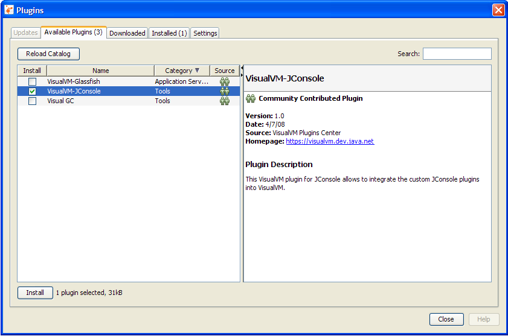
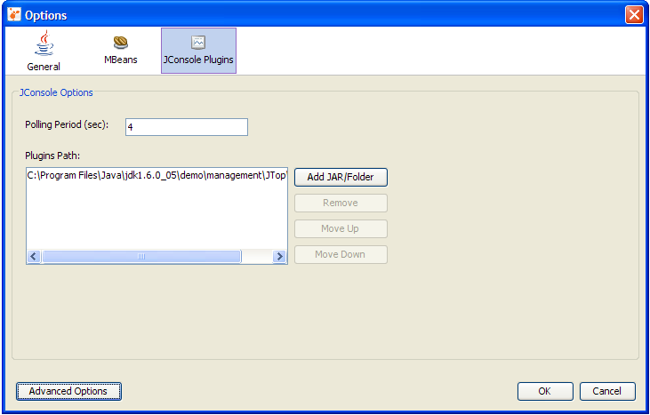

Вкладка JConsole Plug-in Wrapper
Существует необязательный plugin (плагин) VisualVM, который позволяет добавить в VisualVM любые пользовательские вкладки, созданные вами для консоли мониторинга и управления платформы Java, Standard Edition (Java SE) — JConsole. Любые плагины, которые вы собирали для JConsole, можно легко подключить к VisualVM с помощью необязательной вкладки-обёртки JConsole plug-in wrapper.
Примечание: как создавать пользовательские вкладки-плагины для JConsole, см. в разделе Creating Custom Tabs (создание пользовательских вкладок) руководства Java SE platform Monitoring and Management Guide (руководство по мониторингу и управлению). Если же вы пользуетесь VisualVM и никогда не создавали пользовательские вкладки для JConsole, лучше сразу писать свои плагины для VisualVM. См. Getting Started Extending VisualVM (начало расширения VisualVM) и VisualVM API FAQs (часто задаваемые вопросы по API VisualVM) — там больше сведений о создании плагинов VisualVM.
Добавление вкладки JConsole Plug-In Wrapper
Чтобы добавить вкладку-обёртку JConsole plug-in wrapper в VisualVM, выполните следующие шаги:
- Выберите Tools (Инструменты), затем Plugins (плагины) в выпадающих меню VisualVM. Откроется следующее окно.

- Отметьте VisualVM-JConsole и нажмите Install (Установить).
- Пройдите инструкции на экране.
- Теперь, если выделить работающее Java-приложение, щёлкнуть правой кнопкой и выбрать Open (Открыть), в правой части окна VisualVM появится вкладка JConsole Plugins (плагины JConsole). Однако пока на вкладке ещё нет плагинов JConsole, как показано ниже.

- Теперь пользовательские плагины JConsole можно импортировать через меню Tools (Инструменты) | Options (Параметры).
- Нажмите JConsole Plugins (плагины JConsole).
- Нажмите Add JAR/Folder (Добавить JAR/папку) и укажите Java-архив (JAR) вашего плагина JConsole. Пример плагина JConsole с именем JTop поставляется с платформой Java SE 6. Приложение JTop — демонстрация JDK (Java Development Kit, комплект разработки Java), которая показывает использование CPU (процессора) всеми потоками, работающими в приложении. Эта демонстрация полезна, чтобы находить потоки с высокой нагрузкой на CPU, и её обновили так, чтобы она работала и как плагин JConsole, и как отдельный GUI. JAR-файл плагина JTop находится в JDK_HOME/demo/management/JTop/JTop.jar, где JDK_HOME — каталог установки JDK.

- На панели JConsole Plugins Options (параметры плагинов JConsole) можно также задать период опроса (polling period). Этот параметр определяет, как часто вкладка JConsole Plugins будет обновлять сведения, которые показывают импортированные на вкладку плагины JConsole.
- Закройте панель Options, нажав OK.
- В правой панели VisualVM закройте вкладку процесса, который вы мониторите.
- Снова начните мониторинг процесса: щёлкните процесс правой кнопкой в левой панели и выберите Open (Открыть). На вкладке JConsole Plugins должна появиться вкладка JTop.

Добавлена вкладка JTop: на ней видно использование CPU различными работающими потоками.
Return to the VisualVM Documentation index (вернуться к оглавлению документации VisualVM)